Þorsteinn Jónsson
Vínrekki
Rekki undir vínflöskur smíðaður með hjálp geislaskera
Um verkefnið
Verkefnislýsing var svohljóðandi:
Hannaðu parametrískt, geirneglt (pressfit) módel af byggingar einingum. Módelið þarf að vera skalanlegt þannig hægt sé að stilla kerf og efnisþykkt, ásamt stærðum á flötum, með því að vinna með parametrískar breytur. Hægt er að velja um þrjár mismunandi gerðir af efni:Skerðu út módelið og skjalfestu á heimasíðunni þinni.
- 4x300x600mm birkikrossviður
- 4x300x600mm akríl í mismunandi litum
- 1000x700mm pappi í mismunandi þykktum
Undirbúningur
Áður en byrjað er að skera út með geislaskera er mikilvægt að vita hver breidd skurðarins (kerf) er, því þarf að framkvæma kerf test og mæla hvað það er mikið. Framkvæmd þessara mælinga má sjá hér.
Mikill tími fór í hugmyndaleit. Margar góðar hugmyndir komu upp, en að lokum féllst ég á að smíða vínrekka eftir þessari fyrirmynd.
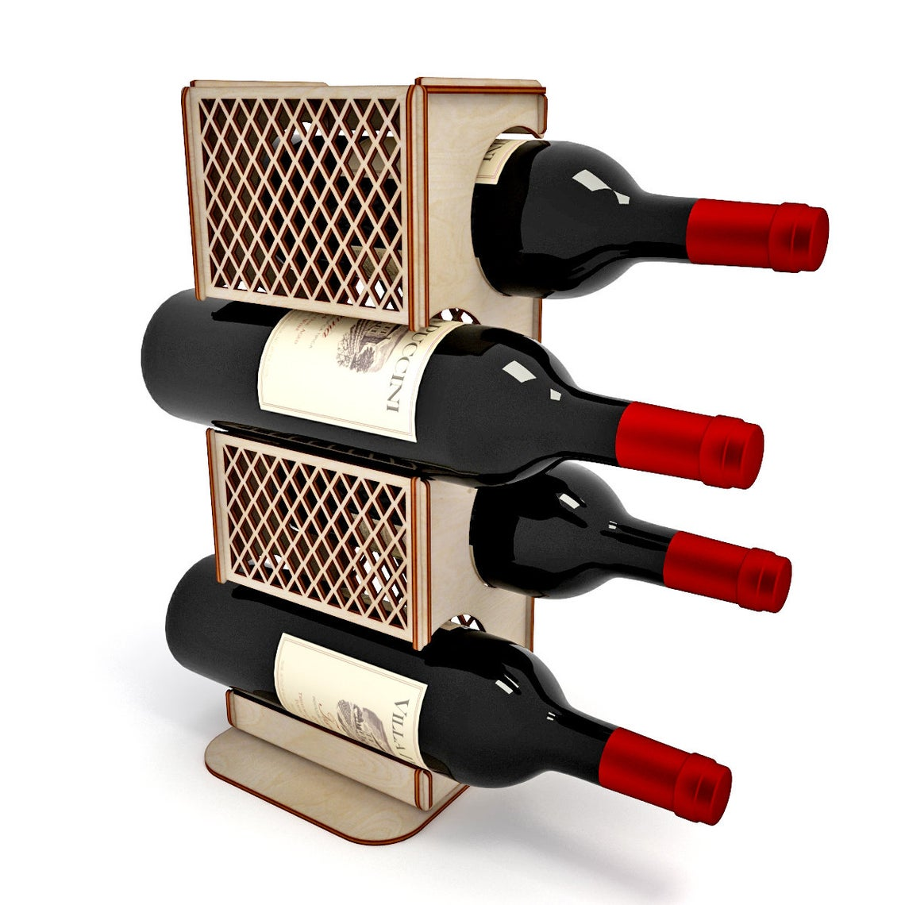Framkvæmd
Ég byrjaði á að opna Fusion 360 og teikna upp skets að fyrstu plötunni.
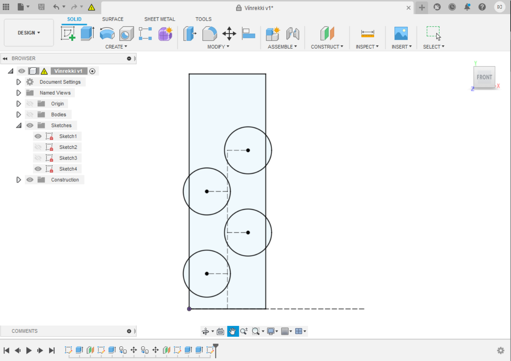Því næst teiknaði ég upp hliðaplöturnar.
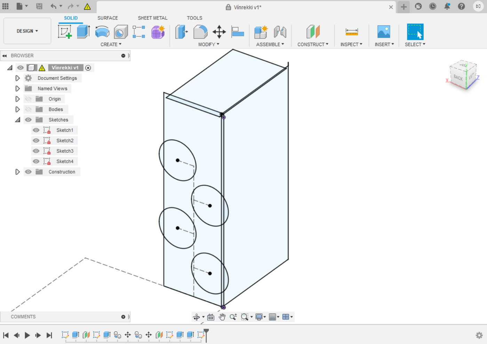Þá gat ég extrudað plöturnar og speglað þær til að fá kassa og að lokum búið til göt fyrir flöskur. Götin ákvað ég að hafa 8 cm í þvermál eftir að hafa mælt þvermál á vínflösku sem ég átti heima, en það var 7,5 cm.
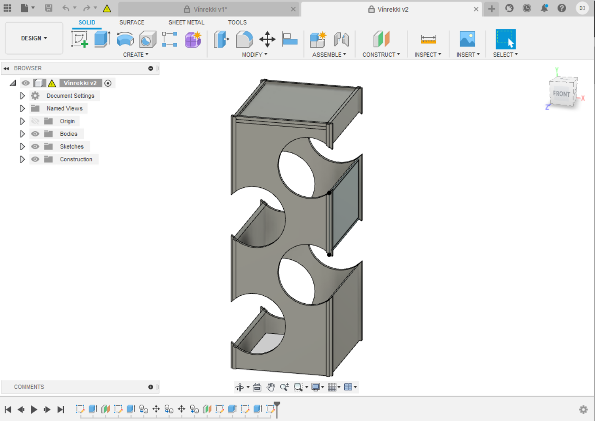Nú var grunn formið tilbúið og ég gat búið til skraut. Ég teiknaði skálínur sem ég bjó til pattern úr og speglaði svo patternið til að fá tíglamunstur.
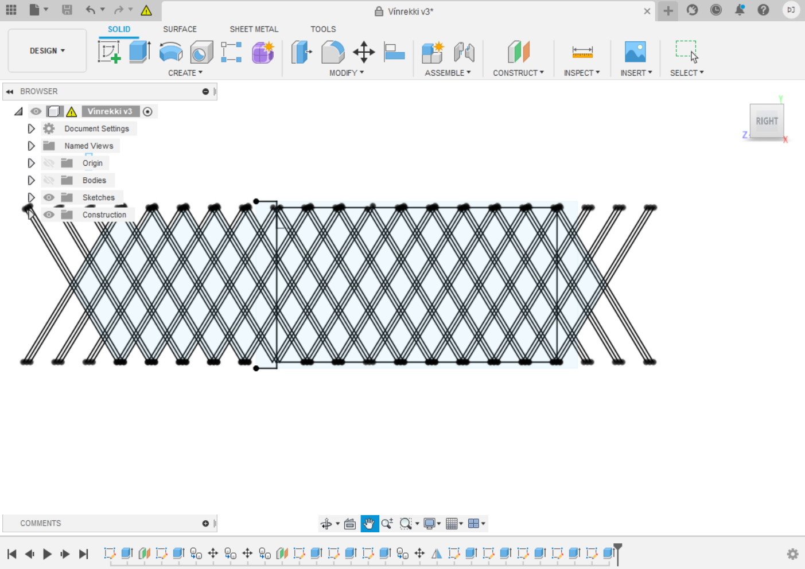Ég extrudaði alla tíglana og endurtók svo ferlið fyrir alla fleti á hliðum rekkans.
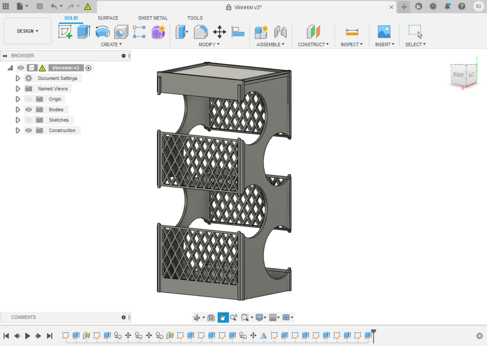Nú var komið að því að búa til krækjur til að festa plöturnar saman. Þær voru settar þannig hliðarplöturnar myndu renna niður í fram- og aftur hliðar rekkans, þar sem þær hliðar mynda megin burðarvirki rekkans. Einnig var passað að topp platan gæti fallið á milli hliðarplatanna næst toppnum.
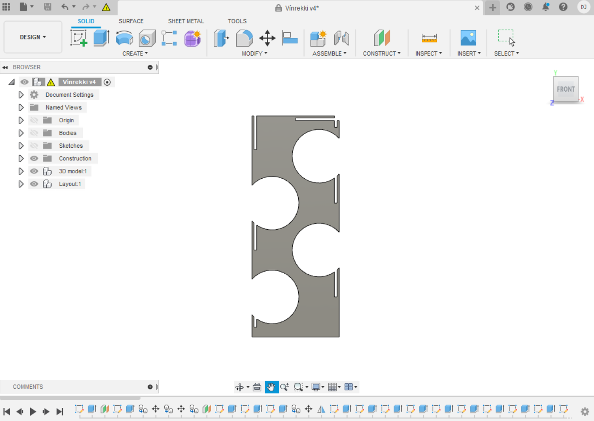 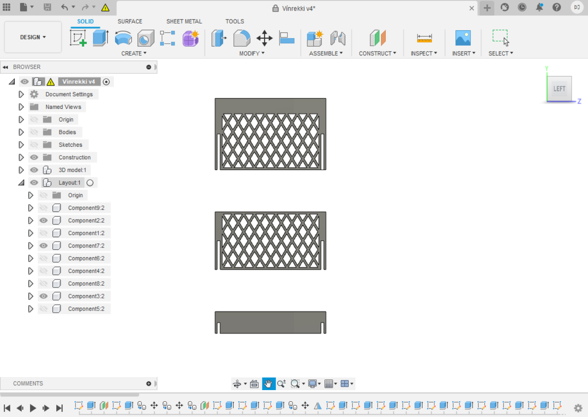Nú gat ég flatt út rekkann og reynt að láta hann passa inn á 60x30 krossviðarplötuna sem ég ætlaði að skera hann úr. Það reyndist þrautin þyngri.
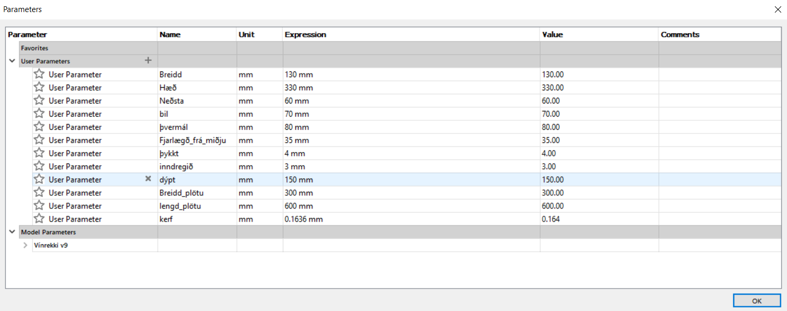Hönnunin var parametrísk, svo lítið mál hefði verið að minnka hana til að passa inn á plötuna. Ég prófaði það, en tölvan mín virtist ekki ráða við það þunga verkefni að laga tíglamunstrið í samræmi við nýju stærðina, svo ég gafst upp á því og samdi við félaga minn um að fá að skera úr plötunni hans það sem ég kom ekki inn á mína eigin.
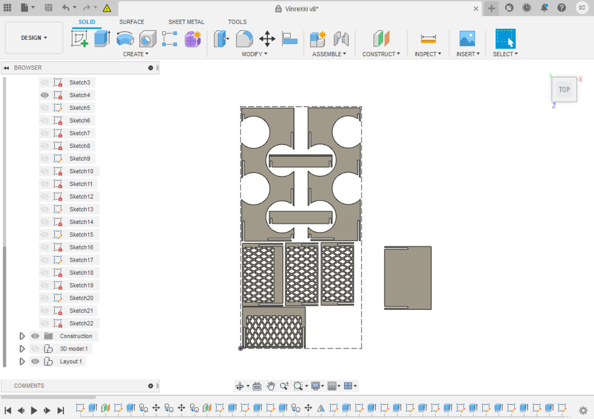Þegar búið var að fletja út hönnunina var auðvelt að varpa formi hennar í skets.
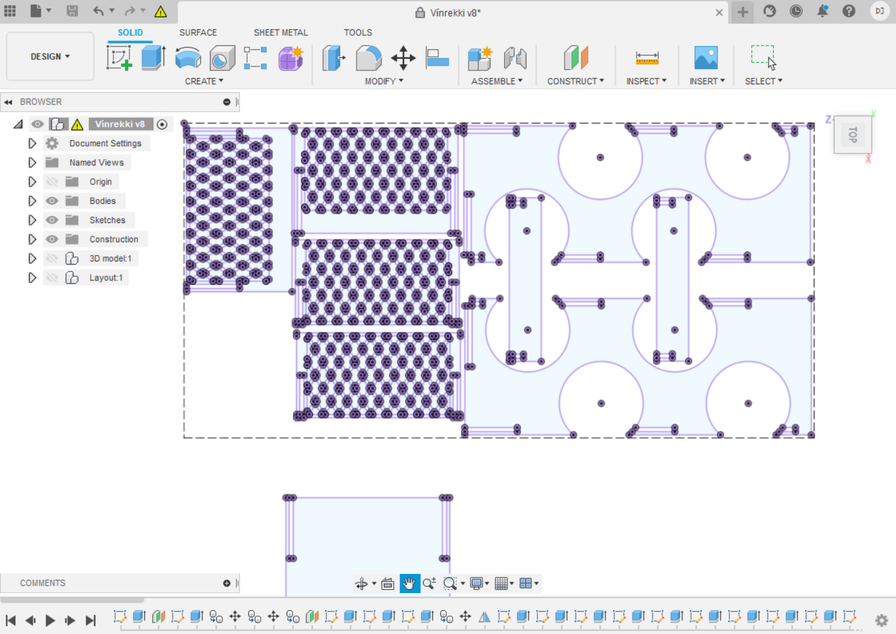Þessum skets var síðan breytt til að gera ráð fyrir þykkt skurðar (kerf) þar sem það skipti máli. Ekki reyndist mikilvægt að gera það fyrir tíglamunstrið þar sem það er einungis til skrauts og þarf ekki að vera nákvæmt.
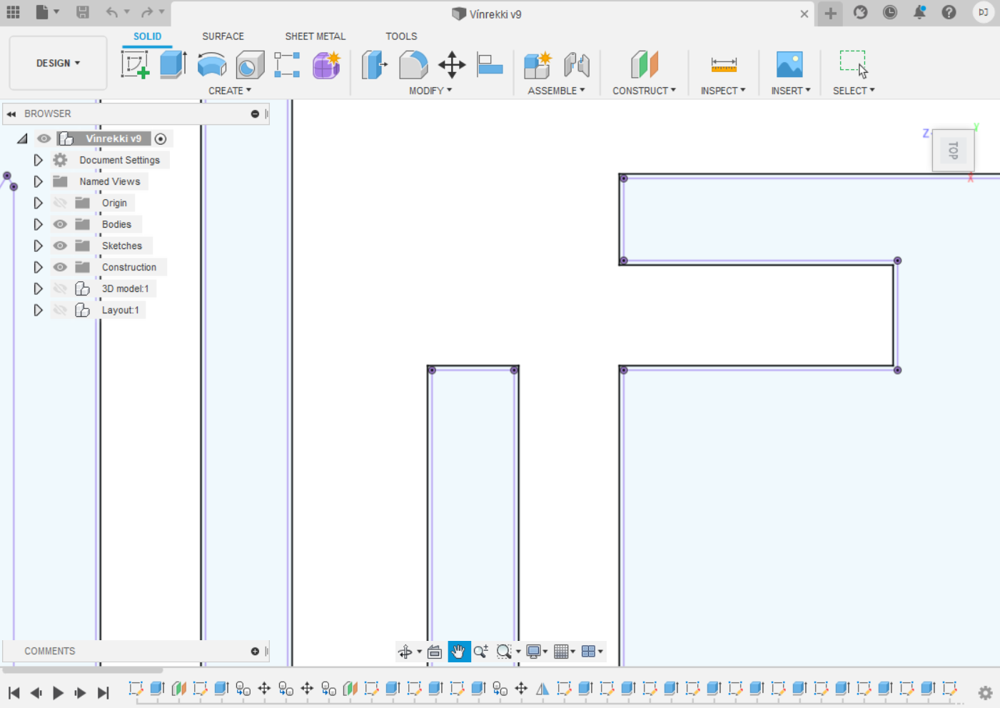Þá var hægt að búa til .dfx skrá og setja inn í inkscape. Lítið þurfti að gera fyrir þessa skrá í Inkscape, einungis þurfti að fjarlægja línurnar sem ekki átti að skera (þær sem gerðu ekki ráð fyrir kerf) og breyta stroke í 0.02. Þá var auðvelt að setja skránna á minnislykil og færa yfir í geislaskerann. Geislaskerinn var stilltur og rekkinn skorinn út.


Niðurstöður
Hægara sagt en gert var að losa vínrekkann af plötunni þar sem geislinn virtist ekki hafa náð að skera almennilega í gegn um hana á nokkrum stöðum. Það hafðist þó með hjálp dúkahnífs og þegar allir hlutar rekkans voru kausir var hægðarleikur að setja hann saman. Verkefnið heppnaðist furðu vel, rekkinn heldur auðveldlega 4 flöskum og lítur vel út. Það eina sem ég vildi hafa gert öðruvísi er að setja botnplötu fyrir aukinn stuðning, og stækka götin fyrir flöskurnar, þar sem flöskur í breiðari kantinum hafa reynst of stórar fyrir rekkann.